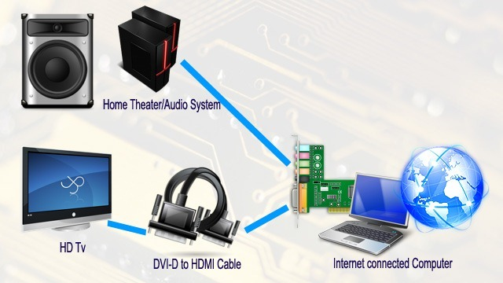

Frankly I don't understand all the rage about Google TV or Apple TV, Boxee etc. For that matter I don't get why device manufacturers (Sony, Samsung etc.) are going down this route either. I mean I see some advantages such as being able to browse online while watching TV. But one can do the same with the PIP capabilities of most TVs too. Of course there may be other advantages of having an integrated TV and browser like in Google TV, but I'd rather have the OS I use everyday including all of the applications, bookmarks etc. that I use on a data-to-day basis available to me while I enjoy the 20 foot experience. Oh and of course the browser of my choice too.
Hook up your Computer to your HD TV
The absolute best way to be online while using your large HD TV as a monitor is to hook up a regular desktop computer to your HD TV. Since most HD TVs have HDMI inputs, you need to use an
DVI-D to HDMI cable to hook up your computer's video output to your TV's HDMI input. That's it. You can now browse the Internet using your favorite browser and essentially use any of the applications you have come to love while using your HD TV as your monitor and sitting back (the 20 foot experience) on your sofa. Typically an HDMI input accepts the video as well as the audio signal. But in this case, since the DVI-D on your computer is only video, the link between your computer and HD TV is a video only link. So you can hook up the audio output of your computer to your home theater system or something similar. Once you have it all connected, the whole experience is awesome, especially if you have good quality content available online.
The 20 foot Experience
Since you're typically sitting 15-20 feet away from your TV in your family room or den, you need a wireless keyboard and mouse. There are a variety of wireless keyboards and mice and some even come combined (the keyboard has the mouse built-in. Some of these devices are just a little larger than your TV remote in fact.
Quality of Content and layout
As it pertains to online video, for the most part the quality of video available is quite pathetic and watching that quality on your 50-70 inch HD TV is not a pleasant sight. Some website's like
ExposureRoom provide exceptional video quality and it is a real pleasure watching HD video from
ExposureRoom on your HD TV. It's almost like watching a Blu-ray disk. Another website that offers good quality video is
Vimeo The other issue is to do with the typical page layout. Most website's constrain the width to about 1024 or thereabouts. So you've got a Full HD TV that can handle a width of 1920 pixels (width) but most of the content uses only half the space. The same thing happens on new desktop monitors, but we've somehow got used to this when we browse the Internet.
Other ways to get online using your HD TV
There are plenty of other ways to get online content to show on your HD TV. Keep in mind, however, that the hardware of these devices will make the difference between being able to watch high quality video content or not. The reason is that these devices act as the "computer" and they are the ones that have to handle the playback of the videos you watch. I haven't tested any of these devices myself, but when I was out looking to buy one, I did do a lot of research and found none that I thought could easily handle the demands HD video makes on the hardware. Maybe there are some that can, so be sure to test before you buy. Make sure also that you have access to the full internet. Most of these devices only give you access to some sites. Pretty much all of them give you access to YouTube, so if that's your thing then you're in luck. Most of them also give you access to Netflix or VOD services such as Amazon.
NeoTV™ 550 Roku VuNow Neuros Link